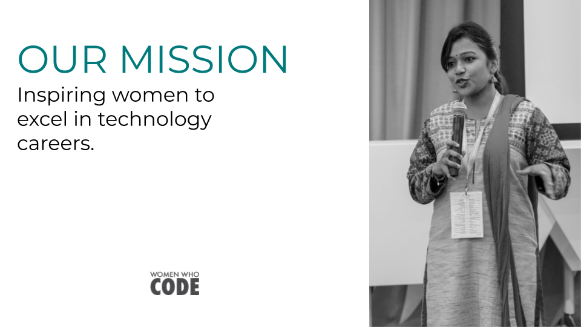
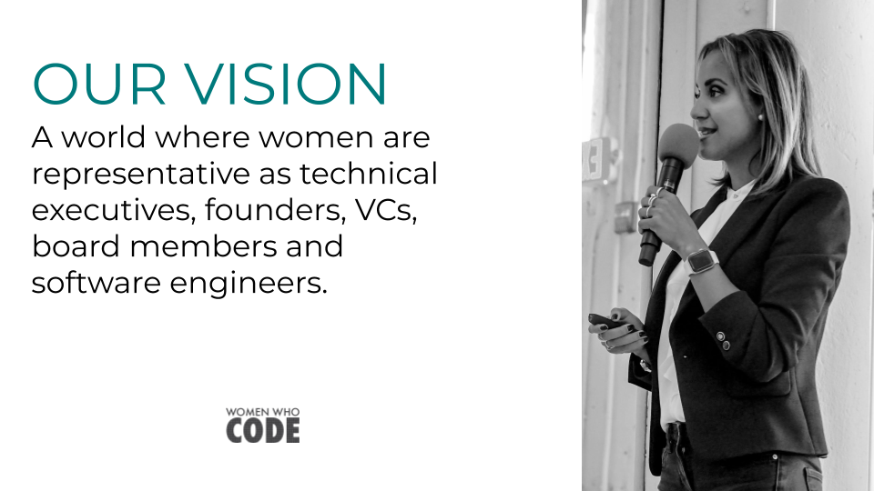
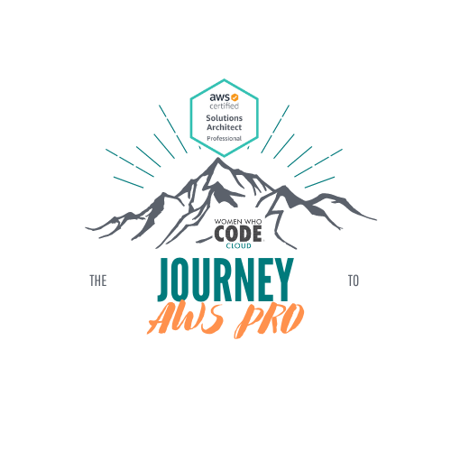
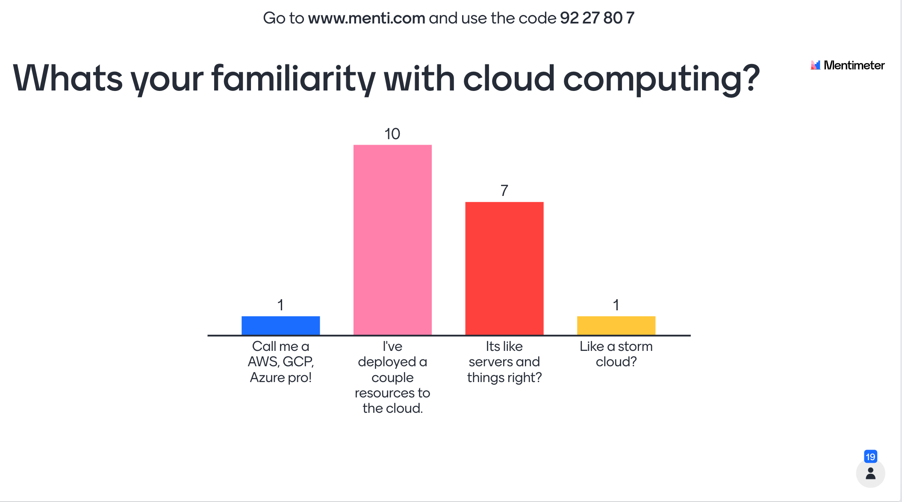
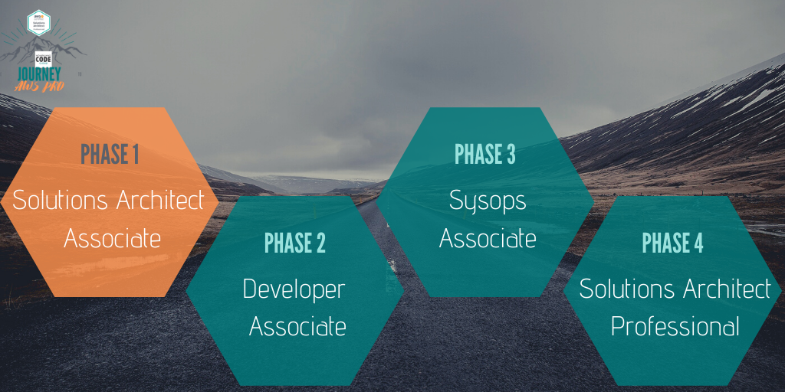
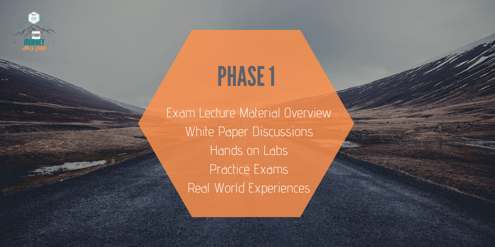
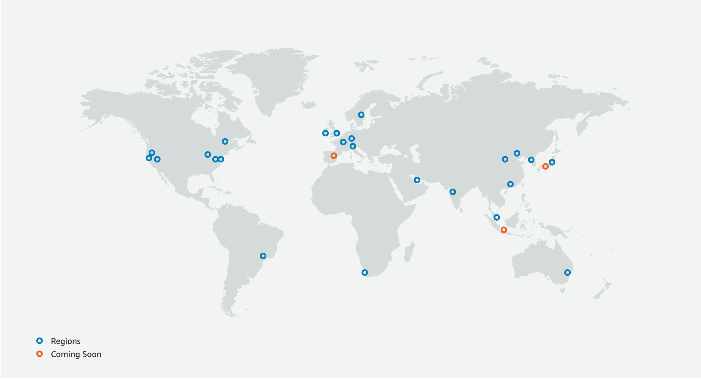

layout: true class: typo, typo-selection --- background-image: url(images/journey_bg_rectangle.png) background-repeat: repeat; class: center, middle ??? Welcome back! Introduce myself and the group ! youtube follow up --- class: left, middle # Agenda WWCode Group & Homework Review Exam Material Review Homework Questions/Collab Time <small>(+a super surprise)</small> --- class: center, middle  --- class: center, middle  --- class: center, middle <img src="images/slides/wwcode_code.png" alt="WWCode Code of Conduct"/> --- class: center, middle # [Upcoming Events](https://www.womenwhocode.com/cloud/events) --- class: center, middle  --- class: center, middle ## About the Group  --- class: center, middle ## About The Group  ??? - 4 phases - each phase on a different exam all the way to phase 4 (pick your pro exam)... - the last phase may be a little different --- class: center, middle ## About The Group  ??? - phase 1: solution architect associate - During each one of the ohases we will break down into 4 components ( balance theory + handson)... 1. Lecture watching _(Newbies feel free to do labs in lectures the more exposure the better! lab section)_ 2. White papers 3. labs 4. practice exams - Always asking questions, adding real world context, and discovering blogs about topics. --- class: center # Phase 1 Schedule ### ✅ 8/29: Group Intro + Resource Review ### ✅ 9/12: Udemy Video Reivew 1-13 ### 9/26: Udemy Video Review 14-23 ### 10/10: White paper review + discussions ### 10/24 10/31 11/14 : Hands on lab and exam practice ### 11/28 Celebrate! Phase 1 Complete --- class: center, middle ## Stay in the know! Join our Slack group! `#aws-studygroup`.<br> Email me! cloud@womenwhocode.com.<br> Replay Past Events! Women Who Code Youtube Channel.<br> Follow Allong on Github! `briaugenreich/aws-certification-resources` --- class: center, middle ### Accountability. Support. Resources. Collaboration. Real World Experiences. ??? - **call out ❗️ we are NOT going to teach you the material...** --- class: middle ## Homework Review 1. Whats your why? 2. Whats your goal? 3. Sign up for your AWS account & **setup a billing budget**! 4. Watch the first half of the lecture series of choice. --- class: center, middle ### Whats your .wwcodebold[WHY?] ??? https://www.mentimeter.com/s/72efaf9ef934bbdd5f39973376db90a0/c8897032f2f3/edit? --- class: center, middle ## Whats your .wwcodebold[GOAL?] --- class: middle ## Homework Review ~~1. Whats your why?~~ ~~2. Whats your goal?~~ 3. Sign up for your AWS account & **setup a billing budget**! 4. Watch the first half of the lecture series of choice. --- class: middle ## Homework Review ~~1. Whats your why?~~ ~~2. Whats your goal?~~ ~~3. Sign up for your AWS account & **setup a billing budget**!~~ 4. Watch the first half of the lecture series of choice. --- class: middle ## Homework Review ~~1. Whats your why?~~ ~~2. Whats your goal?~~ ~~3. Sign up for your AWS account & **setup a billing budget**!~~ ~~4. Watch the first half of the lecture series of choice.~~ --- class: center, middle ## Material Review <small>part 1 of... </small> --- class: center, middle ## How was the pace? ??? Poll: - Keep the pace! (1-13) - Add 1 additional lecture review section (1-8, 9-17,18-24) - Add 2 additional lecture review sections (1-6, 7-12, 13-18, 19-24) --- class: center, middle # Chapter Breakdown <small>For each section we will follow the following: </small> Quick Recap Section Quiz Bri's Food For Thought Group Questions/Discussions ??? - very brief highlight... dont want to reteach (dont have all fancy graphics) ... but jogg our memories - do the section quiz together ... explain the whys share some of the gotchas - food for thought... ACTIVE LEARNING... questions i had or things i noodled on... might only share snipped and if folks are interested in learning more dicuss @ the end or look in github... - open the floor may cap at 5-10 mins per section so we can get through all our sections. - USE NOTE AS A REFERENCE! - WHOS TAKING NOTES!! strongl recommend ...active learning... at least question/look into more points --- # Chapter 1 & 2 <small> The Setup </small> - Account creation + billing setup - Resource overview - Resource download <small> The Exam </small> - 130 mins - ~ 65 questions - multiple choice - passing >720 or 70% - certified for three years ??? **cloud providers -> servers + services you can use on demand --- class: center, middle # Chapter 1 & 2 Questions? --- ## .wwcodebold[Chapter 3:] IAM & EC2 - Regions vs Availability Zones - Regions: a geographic area, reduce latency, have 2 or more data centers - Availability Zones (AZ): the represenation of a data center - Some services are regional (EC2, RDS) and some are global (R53, IAM) <a href="https://aws.amazon.com/about-aws/global-infrastructure/"></a> ??? - What region are yall using? --- ## .wwcodebold[Chapter 3:] IAM & EC2 - IAM = Identity and Access Management - acces control for all AWS people (users + groups) and resources (ec2, rds, etc) - least privilege access - one user per person - one role per application - **never** share iam creds or save them in github/code - never use the root credentials --- ## .wwcodebold[Chapter 3:] IAM & EC2 - EC2 is the _powerhouse_ and _fundamentals_ of AWS compute - Virtual machine where you pick your CPU & RAM (**instance type**), OS (AMI), storage (ebs volume), and security (security groups) - Ssh into our instance via port 22 (**exam question on modifying pem file permissions**) - Configure/bootstrap our instance via user data - Security Groups: fundamentals of AWS security - define rules for inbound & outbound traffic on specific ports - timeouts are almost always security group issues ??? - review instance reservations (reserved, spot,on demand, dedicated, dedicated host) - review instance types (R, C, M, I, G,t2/t3) --- ## .wwcodebold[Chapter 3:] IAM & EC2 - Private, Public and Elastic IPs - IPv6 (2001:0db8:85a3:0000:0000:8a2e:0370:7334) and IPv4 (172.16.254.1.) - Public IP: machine can be identified on the internet (unique across the entire web) - Private IP: machine can be identified on/accessed on a pirivate network (uqnique within subnet range for network) - Elastic IP: give a fixed **public IP ** --- ## .wwcodebold[Chapter 3:] IAM & EC2 - ENI: Elastic Network Interface - logical represnetation of a virtual network card - enables attachment of primary private IP, secondary primary IP, MAC address, SGs - Can only attach a public IP as inital eth0 (on machine startup ec2 is assigned an ENI with a public IP) ??? - IPs are our address to our machines - this is where i stumble a bit - avoid using ips ... use dns or lbs - 3 elastic ips per account --- class:center, middle # [Chapter 3 Quiz](https://www.udemy.com/course/aws-certified-solutions-architect-associate-saa-c02/learn/quiz/4594946#overview) --- # Chapter 3 Food For Thought SSH v Telnet Favorite provisioning tools? `ifConfig` What common tools do you install / uses cases for user data? [Baking vs Frying](https://docs.google.com/presentation/d/1EiztD9WOft77vKU2JAGhzWLasa_rDPmSqTVMJmsc6N8/edit#slide=id.g87586083ef_0_66) [https://ec2instances.info/](https://ec2instances.info/) --- class: center, middle # Chapter 3 Questions? --- ## .wwcodebold[Chapter 4:] ELB & ASG We want to enable **vertical** scalability (increase size m4.large -> m4.xlarge). We want to enable **horizantal** elasticity (1 instance to 4 instances). We want to enable high availability (survivial of a data center or region outage). --- ## .wwcodebold[Chapter 4:] ELB & ASG - Elastic Load Balancer: single dns or ip entry point that routes traffic to various backends (technically is a server under the hood) - Enable elasticitiy and high availability - Classic Load Balancer: layer 4 (TCP) and layer 7 (HTTP) communication that routes traffic to fixed hosts **legacy/depricated ** - Application load balancer: layer 7 (HTTP) communication that routes traffic to various target groups and can perform health checks - Network load balancer: layer 4 (TCP) communication that provides high throughput and low latency routing to target groups - Stickiness & cross zone balancing are important features to remember! --- ## .wwcodebold[Chapter 4:] ELB & ASG - Autoscaling group: scales ec2 instances to match increased or decreased load - Enables elasticity and high availability (sort of) - Launch Templates vs Launch Config: both provide information on what the instance should look like when it comes up. - 3 scaling policies: target tracking scaling, simple/step scaling, scheduled action ??? - launch tempalte = new + spot fleet + versiong - launch config = old + one instance type --- # Chapter 4 Food For Thought Other load balancers (HAProxy) Anyone have a good network layer explination? SSL/TLS Has anyone confured their own cert in ACM? A fun story about load balancer warming! ALB Web socket connections? Whats a use case for ASG lifecycle hooks? --- class: center, middle # Chapter 4 Questions? --- ## .wwcodebold[Chapter X:] TOPIC --- # Chapter X Food For Thought --- class: center, middle # Chapter X Questions? --- class: middle ## Homework 1. Watch the next ___ videos of the lecture series of choice. --- class: middle, center # We have an attendee raffle!!! --- class: middle # Raffle Details We are proud to partner with interviewing.io to do a raffle for all attendees today! - A free interviewing.io algorithmic mock interview with a senior FAANG engineer - A $30 credit good toward any premium interview or coaching session with a senior FAANG engineer In order to qualify, attendees must: - Sign up with [this link](https://interviewing.io/?utm_source=wwc&utm_medium=organic&utm_campaign=raffle) - Set up their account <small>interviewing.io will be selecting winners at noon PT the day after each event</small> --- class: center, middle ## .wwcodebold[Questions] & .wwcodebold[Collab Time] ??? - exam guide -> https://d1.awsstatic.com/training-and-certification/docs-sa-assoc/AWS-Certified-Solutions-Architect-Associate_Exam-Guide.pdf - Sample Questions -> https://d1.awsstatic.com/training-and-certification/docs-sa-assoc/AWS-Certified-Solutions-Architect-Associate_Sample-Questions.pdf